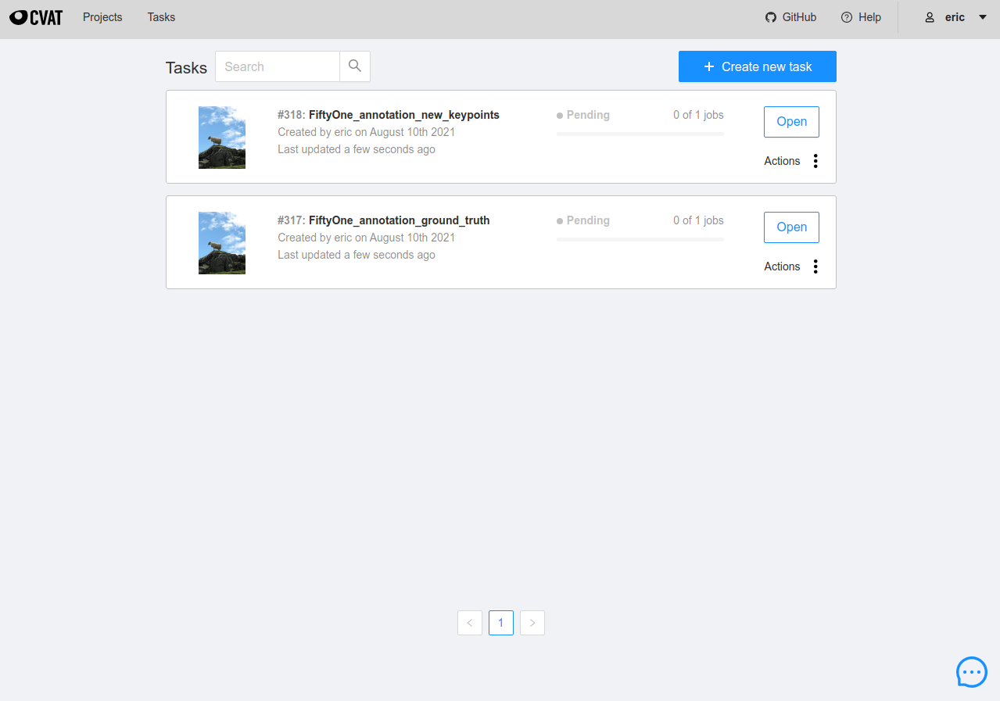
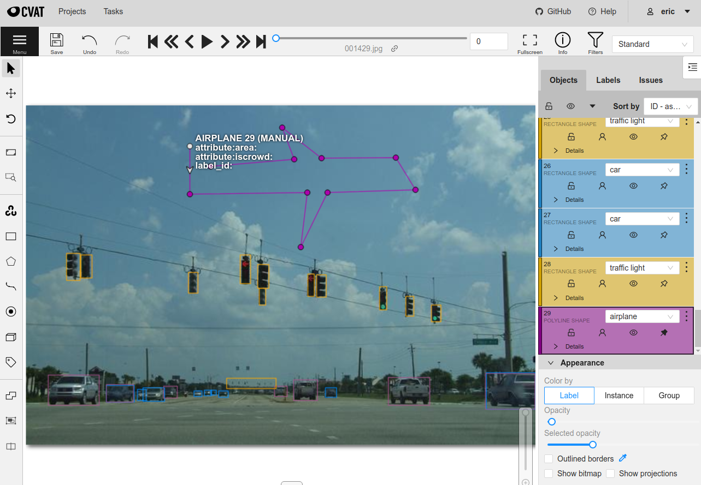
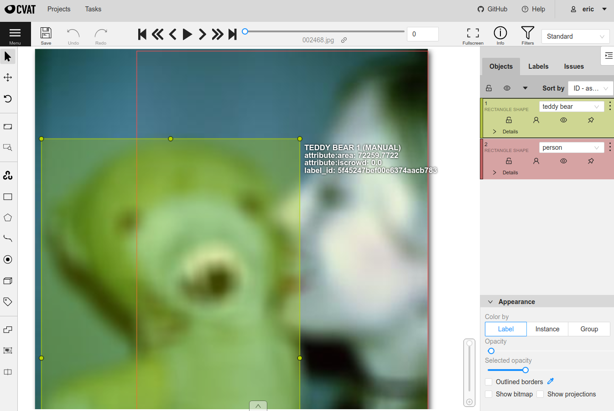
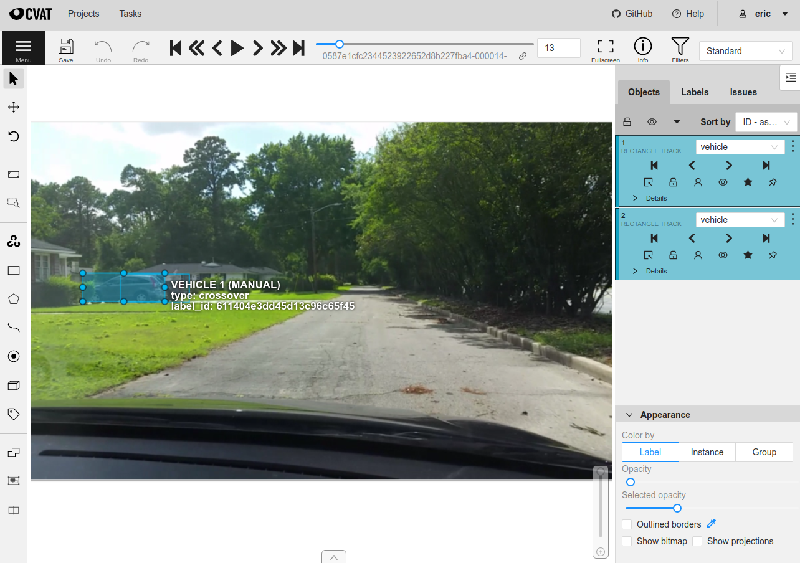

CVAT Integration ¶¶
CVAT is one of the most popular open-source image and video annotation tools available, and we’ve made it easy to upload your data directly from FiftyOne to CVAT to add or edit labels.
You can use CVAT either through the hosted server at app.cvat.ai or through a self-hosted server. In either case, FiftyOne provides simple setup instructions that you can use to specify the necessary account credentials and server endpoint to use.
Note
Did you know? You can request, manage, and import annotations from within the FiftyOne App by installing the @voxel51/annotation plugin!
CVAT provides three levels of abstraction for annotation workflows: projects, tasks, and jobs. A job contains one or more images and can be assigned to a specific annotator or reviewer. A task defines the label schema to use for annotation and contains one or more jobs. A project can optionally be created to group multiple tasks together under a shared label schema.
FiftyOne provides an API to create tasks and jobs, upload data, define label schemas, and download annotations using CVAT, all programmatically in Python. All of the following label types are supported, for both image and video datasets:
Note
Check out this tutorial to see how you can use FiftyOne to upload your data to CVAT to create, delete, and fix annotations.
Basic recipe ¶¶
The basic workflow to use CVAT to add or edit labels on your FiftyOne datasets is as follows:
-
Load a labeled or unlabeled dataset into FiftyOne
-
Explore the dataset using the App or dataset views to locate either unlabeled samples that you wish to annotate or labeled samples whose annotations you want to edit
-
Use the
annotate()method on your dataset or view to upload the samples and optionally their existing labels to CVAT -
In CVAT, perform the necessary annotation work
-
Back in FiftyOne, load your dataset and use the
load_annotations()method to merge the annotations back into your FiftyOne dataset -
If desired, delete the CVAT tasks and the record of the annotation run from your FiftyOne dataset
The example below demonstrates this workflow.
Note
You must create an account at app.cvat.ai in order to run this example.
Note that you can store your credentials as described in this section to avoid entering them manually each time you interact with CVAT.
First, we create the annotation tasks in CVAT:
import fiftyone as fo
import fiftyone.zoo as foz
from fiftyone import ViewField as F
# Step 1: Load your data into FiftyOne
dataset = foz.load_zoo_dataset(
"quickstart", dataset_name="cvat-annotation-example"
)
dataset.persistent = True
dataset.evaluate_detections(
"predictions", gt_field="ground_truth", eval_key="eval"
)
# Step 2: Locate a subset of your data requiring annotation
# Create a view that contains only high confidence false positive model
# predictions, with samples containing the most false positives first
most_fp_view = (
dataset
.filter_labels("predictions", (F("confidence") > 0.8) & (F("eval") == "fp"))
.sort_by(F("predictions.detections").length(), reverse=True)
)
# Let's edit the ground truth annotations for the sample with the most
# high confidence false positives
sample_id = most_fp_view.first().id
view = dataset.select(sample_id)
# Step 3: Send samples to CVAT
# A unique identifier for this run
anno_key = "cvat_basic_recipe"
view.annotate(
anno_key,
label_field="ground_truth",
attributes=["iscrowd"],
launch_editor=True,
)
print(dataset.get_annotation_info(anno_key))
# Step 4: Perform annotation in CVAT and save the tasks
Then, once the annotation work is complete, we merge the annotations back into FiftyOne:
import fiftyone as fo
anno_key = "cvat_basic_recipe"
# Step 5: Merge annotations back into FiftyOne dataset
dataset = fo.load_dataset("cvat-annotation-example")
dataset.load_annotations(anno_key)
# Load the view that was annotated in the App
view = dataset.load_annotation_view(anno_key)
session = fo.launch_app(view=view)
# Step 6: Cleanup
# Delete tasks from CVAT
results = dataset.load_annotation_results(anno_key)
results.cleanup()
# Delete run record (not the labels) from FiftyOne
dataset.delete_annotation_run(anno_key)
Note
Skip to this section to see a variety of common CVAT annotation patterns.
Setup ¶¶
FiftyOne supports both app.cvat.ai and self-hosted servers.
The easiest way to get started is to use the default server app.cvat.ai, which simply requires creating an account and then providing your authentication credentials as shown below.
Note
CVAT is the default annotation backend used by FiftyOne. However, if you
have changed your default backend, you can opt-in to using CVAT on a
one-off basis by passing the optional backend parameter to
annotate():
view.annotate(anno_key, backend="cvat", ...)
Refer to these instructions to see how to permanently change your default backend.
Authentication ¶¶
In order to connect to a CVAT server, you must provide your login credentials, which can be done in a variety of ways.
Environment variables (recommended)
The recommended way to configure your CVAT login credentials is to store them
in the FIFTYONE_CVAT_USERNAME and FIFTYONE_CVAT_PASSWORD environment
variables. These are automatically accessed by FiftyOne whenever a connection
to CVAT is made.
export FIFTYONE_CVAT_USERNAME=...
export FIFTYONE_CVAT_PASSWORD=...
export FIFTYONE_CVAT_EMAIL=... # if applicable
FiftyOne annotation config
You can also store your credentials in your
annotation config located at
~/.fiftyone/annotation_config.json:
{
"backends": {
"cvat": {
...
"username": ...,
"password": ...,
"email": ... # if applicable
}
}
}
Note that this file will not exist until you create it.
Warning
Storing your username and password in plain text on disk is generally not recommended. Consider using environment variables instead.
Keyword arguments
You can manually provide your login credentials as keyword arguments each time
you call methods like
annotate() and
load_annotations()
that require connections to CVAT:
view.annotate(anno_key, ..., username=..., password=...)
Command line prompt
If you have not stored your login credentials via another method, you will be prompted to enter them interactively in your shell each time you call a method that requires a connection to CVAT:
view.annotate(anno_key, label_field="ground_truth", launch_editor=True)
Please enter your login credentials.
You can avoid this in the future by setting your `FIFTYONE_CVAT_USERNAME` and `FIFTYONE_CVAT_PASSWORD` environment variables.
Username: ...
Password: ...
Self-hosted servers ¶¶
If you wish to use a self-hosted server, you can configure the URL of your server in any of the following ways:
- Set the
FIFTYONE_CVAT_URLenvironment variable:
export FIFTYONE_CVAT_URL=http://localhost:8080
- Store the
urlof your server in your annotation config at~/.fiftyone/annotation_config.json:
{
"backends": {
"cvat": {
"url": "http://localhost:8080",
...
}
}
}
- Pass the
urlparameter manually each time you callannotate():
view.annotate(anno_key, ..., url="http://localhost:8080")
If your self-hosted server requires additional headers in order to make HTTP requests, you can provide them in either of the following ways:
- Store your custom headers in a
headerskey of your annotation config at~/.fiftyone/annotation_config.json:
{
"backends": {
"cvat": {
...
"headers": {
"<name>": "<value>",
...
}
}
}
}
- Pass the
headersparameter manually each time you callannotate()andload_annotations():
view.annotate(anno_key, ... headers=...)
view.load_annotations(anno_key, ... headers=...)
Requesting annotations ¶¶
Use the
annotate() method
to send the samples and optionally existing labels in a Dataset or
DatasetView to CVAT for annotation.
The basic syntax is:
anno_key = "..."
view.annotate(anno_key, ...)
The anno_key argument defines a unique identifier for the annotation run, and
you will provide it to methods like
load_annotations(),
get_annotation_info(),
load_annotation_results(),
rename_annotation_run(), and
delete_annotation_run()
to manage the run in the future.
Warning
FiftyOne assumes that all labels in an annotation run can fit in memory.
If you are annotating very large scale video datasets with dense frame labels, you may violate this assumption. Instead, consider breaking the work into multiple smaller annotation runs that each contain limited subsets of the samples you wish to annotate.
You can use Dataset.stats()
to get a sense for the total size of the labels in a dataset as a rule of
thumb to estimate the size of a candidate annotation run.
In addition,
annotate()
provides various parameters that you can use to customize the annotation tasks
that you wish to be performed.
The following parameters are supported by all annotation backends:
-
backend ( None): the annotation backend to use. Use
"cvat"for the CVAT backend. The supported values arefiftyone.annotation_config.backends.keys()and the default isfiftyone.annotation_config.default_backend -
media_field ( “filepath”): the sample field containing the path to the source media to upload
-
launch_editor ( False): whether to launch the annotation backend’s editor after uploading the samples
The following parameters allow you to configure the labeling schema to use for your annotation tasks. See this section for more details:
-
label_schema ( None): a dictionary defining the label schema to use. If this argument is provided, it takes precedence over
label_fieldandlabel_type -
label_field ( None): a string indicating a new or existing label field to annotate
-
label_type ( None): a string indicating the type of labels to annotate. The possible label types are:
-
"classification": a single classification stored inClassificationfields -
"classifications": multilabel classifications stored inClassificationsfields -
"detections": object detections stored inDetectionsfields -
"instances": instance segmentations stored inDetectionsfields with theirmaskattributes populated -
"polylines": polylines stored inPolylinesfields with theirfilledattributes set toFalse -
"polygons": polygons stored inPolylinesfields with theirfilledattributes set toTrue -
"keypoints": keypoints stored inKeypointsfields -
"segmentation": semantic segmentations stored inSegmentationfields -
"scalar": scalar labels stored inIntField,FloatField,StringField, orBooleanFieldfields
All new label fields must have their type specified via this argument or in
label_schema
-
classes ( None): a list of strings indicating the class options for
label_fieldor all fields inlabel_schemawithout classes specified. All new label fields must have a class list provided via one of the supported methods. For existing label fields, if classes are not provided by this argument norlabel_schema, the observed labels on your dataset are used -
attributes ( True): specifies the label attributes of each label field to include (other than their
label, which is always included) in the annotation export. Can be any of the following: -
True: export all label attributes -
False: don’t export any custom label attributes -
a list of label attributes to export
-
a dict mapping attribute names to dicts specifying the
type,values, anddefaultfor each attribute
If a label_schema is also provided, this parameter determines which
attributes are included for all fields that do not explicitly define their
per-field attributes (in addition to any per-class attributes)
-
mask_targets ( None): a dict mapping pixel values to semantic label strings. Only applicable when annotating semantic segmentations
-
allow_additions ( True): whether to allow new labels to be added. Only applicable when editing existing label fields
-
allow_deletions ( True): whether to allow labels to be deleted. Only applicable when editing existing label fields
-
allow_label_edits ( True): whether to allow the
labelattribute of existing labels to be modified. Only applicable when editing existing fields withlabelattributes -
allow_index_edits ( True): whether to allow the
indexattribute of existing video tracks to be modified. Only applicable when editing existing frame fields withindexattributes -
allow_spatial_edits ( True): whether to allow edits to the spatial properties (bounding boxes, vertices, keypoints, masks, etc) of labels. Only applicable when editing existing spatial label fields
In addition, the following CVAT-specific parameters from
CVATBackendConfig can also be
provided:
-
task_size ( None): an optional maximum number of images to upload per task. Videos are always uploaded one per task
-
segment_size ( None): the maximum number of images to upload per job. Not applicable to videos
-
image_quality ( 75): an int in
[0, 100]determining the image quality to upload to CVAT -
use_cache ( True): whether to use a cache when uploading data. Using a cache reduces task creation time as data will be processed on-the-fly and stored in the cache when requested
-
use_zip_chunks ( True): when annotating videos, whether to upload video frames in smaller chunks. Setting this option to
Falsemay result in reduced video quality in CVAT due to size limitations on ZIP files that can be uploaded to CVAT -
chunk_size ( None): the number of frames to upload per ZIP chunk
-
task_assignee ( None): the username to assign the generated tasks. This argument can be a list of usernames when annotating videos as each video is uploaded to a separate task
-
job_assignees ( None): a list of usernames to assign jobs
-
job_reviewers ( None): a list of usernames to assign job reviews. Only available in CVAT v1 servers
-
project_name ( None): an optional project name to which to upload the created CVAT task. If a project with this name exists, it will be used, otherwise a new project is created. By default, no project is used
-
project_id ( None): an optional ID of an existing CVAT project to which to upload the annotation tasks. By default, no project is used
-
task_name (None): an optional task name to use for the created CVAT task
-
occluded_attr ( None): an optional attribute name containing existing occluded values and/or in which to store downloaded occluded values for all objects in the annotation run
-
group_id_attr ( None): an optional attribute name containing existing group ids and/or in which to store downloaded group ids for all objects in the annotation run
-
issue_tracker ( None): URL(s) of an issue tracker to link to the created task(s). This argument can be a list of URLs when annotating videos or when using
task_sizeand generating multiple tasks -
organization ( None): the name of the organization to use when sending requests to CVAT
-
frame_start ( None): nonnegative integer(s) defining the first frame of videos to upload when creating video tasks. Supported values are:
-
integer: the first frame to upload for each video -
list: a list of first frame integers corresponding to videos in the given samples -
dict: a dictionary mapping sample filepaths to first frame integers to use for the corresponding videos -
frame_stop ( None): nonnegative integer(s) defining the last frame of videos to upload when creating video tasks. Supported values are:
-
integer: the last frame to upload for each video -
list: a list of last frame integers corresponding to videos in the given samples -
dict: a dictionary mapping sample filepaths to last frame integers to use for the corresponding videos -
frame_step ( None): positive integer(s) defining which frames to sample when creating video tasks. Supported values are:
-
integer: the frame step to apply to each video task -
list: a list of frame step integers corresponding to videos in the given samples -
dict: a dictionary mapping sample filepaths to frame step integers to use for the corresponding videos
Note that this argument cannot be provided when uploading existing tracks
Label schema ¶¶
The label_schema, label_field, label_type, classes, attributes, and
mask_targets parameters to
annotate() allow
you to define the annotation schema that you wish to be used.
The label schema may define new label field(s) that you wish to populate, and it may also include existing label field(s), in which case you can add, delete, or edit the existing labels on your FiftyOne dataset.
The label_schema argument is the most flexible way to define how to construct
tasks in CVAT. In its most verbose form, it is a dictionary that defines the
label type, annotation type, possible classes, and possible attributes for each
label field:
anno_key = "..."
label_schema = {
"new_field": {
"type": "classifications",
"classes": ["class1", "class2"],
"attributes": {
"attr1": {
"type": "select",
"values": ["val1", "val2"],
"default": "val1",
},
"attr2": {
"type": "radio",
"values": [True, False],
"default": False,
}
},
},
"existing_field": {
"classes": ["class3", "class4"],
"attributes": {
"attr3": {
"type": "text",
}
}
},
}
dataset.annotate(anno_key, label_schema=label_schema)
You can also define class-specific attributes by setting elements of the
classes list to dicts that specify groups of classes and their
corresponding attributes. For example, in the configuration below, attr1
only applies to class1 and class2 while attr2 applies to all classes:
anno_key = "..."
label_schema = {
"new_field": {
"type": "detections",
"classes": [\
{\
"classes": ["class1", "class2"],\
"attributes": {\
"attr1": {\
"type": "select",\
"values": ["val1", "val2"],\
"default": "val1",\
}\
}\
},\
"class3",\
"class4",\
],
"attributes": {
"attr2": {
"type": "radio",
"values": [True, False],
"default": False,
}
},
},
}
dataset.annotate(anno_key, label_schema=label_schema)
Alternatively, if you are only editing or creating a single label field, you
can use the label_field, label_type, classes, attributes, and
mask_targets parameters to specify the components of the label schema
individually:
anno_key = "..."
label_field = "new_field",
label_type = "classifications"
classes = ["class1", "class2"]
# These are optional
attributes = {
"attr1": {
"type": "select",
"values": ["val1", "val2"],
"default": "val1",
},
"attr2": {
"type": "radio",
"values": [True, False],
"default": False,
}
}
dataset.annotate(
anno_key,
label_field=label_field,
label_type=label_type,
classes=classes,
attributes=attributes,
)
When you are annotating existing label fields, you can omit some of these
parameters from
annotate(), as
FiftyOne can infer the appropriate values to use:
-
label_type: if omitted, the
Labeltype of the field will be used to infer the appropriate value for this parameter -
classes: if omitted for a non-semantic segmentation field, the observed labels on your dataset will be used to construct a classes list
Label attributes ¶¶
The attributes parameter allows you to configure whether
custom attributes beyond the default label attribute
are included in the annotation tasks.
When adding new label fields for which you want to include attributes, you must use the dictionary syntax demonstrated below to define the schema of each attribute that you wish to label:
anno_key = "..."
attributes = {
"is_truncated": {
"type": "radio",
"values": [True, False],
"default": False,
},
"gender": {
"type": "select",
"values": ["male", "female"],
},
"caption": {
"type": "text",
}
}
view.annotate(
anno_key,
label_field="new_field",
label_type="detections",
classes=["dog", "cat", "person"],
attributes=attributes,
)
You can always omit this parameter if you do not require attributes beyond the
default label.
For CVAT, the following type values are supported:
-
text: a free-form text box. In this case,defaultis optional andvaluesis unused -
select: a selection dropdown. In this case,valuesis required anddefaultis optional -
radio: a radio button list UI. In this case,valuesis required anddefaultis optional -
checkbox: a boolean checkbox UI. In this case,defaultis optional andvaluesis unused -
occluded: CVAT’s builtin occlusion toggle icon. This widget type can only be specified for at most one attribute, which must be a boolean -
group_id: CVAT’s grouping capabilities. This attribute type can only be specified for at most one attribute, which must be an integer
When you are annotating existing label fields, the attributes parameter can
take additional values:
-
True(default): export all custom attributes observed on the existing labels, using their observed values to determine the appropriate UI type and possible values, if applicable -
False: do not include any custom attributes in the export -
a list of custom attributes to include in the export
-
a full dictionary syntax described above
Note that only scalar-valued label attributes are supported. Other attribute types like lists, dictionaries, and arrays will be omitted.
Restricting additions, deletions, and edits ¶¶
When you create annotation runs that involve editing existing label fields, you
can optionally specify that certain changes are not allowed by passing the
following flags to
annotate():
-
allow_additions ( True): whether to allow new labels to be added
-
allow_deletions ( True): whether to allow labels to be deleted
-
allow_label_edits ( True): whether to allow the
labelattribute to be modified -
allow_index_edits ( True): whether to allow the
indexattribute of video tracks to be modified -
allow_spatial_edits ( True): whether to allow edits to the spatial properties (bounding boxes, vertices, keypoints, etc) of labels
If you are using the label_schema parameter to provide a full annotation
schema to
annotate(), you
can also directly include the above flags in the configuration dicts for any
existing label field(s) you wish.
For example, suppose you have an existing ground_truth field that contains
objects of various types and you would like to add new sex and age
attributes to all people in this field while also strictly enforcing that no
objects can be added, deleted, or have their labels or bounding boxes modified.
You can configure an annotation run for this as follows:
anno_key = "..."
attributes = {
"sex": {
"type": "select",
"values": ["male", "female"],
},
"age": {
"type": "text",
},
}
view.annotate(
anno_key,
label_field="ground_truth",
classes=["person"],
attributes=attributes,
allow_additions=False,
allow_deletions=False,
allow_label_edits=False,
allow_spatial_edits=False,
)
You can also include a read_only=True parameter when uploading existing
label attributes to specify that the attribute’s value should be uploaded to
the annotation backend for informational purposes, but any edits to the
attribute’s value should not be imported back into FiftyOne.
For example, if you have vehicles with their make attribute populated and you
want to populate a new model attribute based on this information without
allowing changes to the vehicle’s make, you can configure an annotation run
for this as follows:
anno_key = "..."
attributes = {
"make": {
"type": "text",
"read_only": True,
},
"model": {
"type": "text",
},
}
view.annotate(
anno_key,
label_field="ground_truth",
classes=["vehicle"],
attributes=attributes,
)
Note that, if you use CVAT projects to organize your annotation tasks, the
above restrictions must be manually re-specified in your call to
annotate() for
each annotation task that you add to an existing project, since CVAT does not
provide support for these settings natively.
Warning
The CVAT backend does not support restrictions to additions, deletions, spatial edits, and read-only attributes in its editing interface.
However, any restrictions that you specify via the above parameters will
still be enforced when you call
load_annotations()
to merge the annotations back into FiftyOne.
IMPORTANT: When uploading existing labels to CVAT, the id of the
labels in FiftyOne are stored in a label_id attribute of the CVAT shapes.
If a label_id is modified in CVAT, then FiftyOne may not be able to merge
the annotation with its existing Label instance; it must instead delete
the existing label and create a new Label with the shape’s contents. In
such cases, if allow_additions and/or allow_deletions were set to
False on the annotation schema, this can result in CVAT edits being
rejected. See this section for details.
Labeling videos ¶¶
When annotating spatiotemporal objects in videos, you have a few additional options at your fingertips.
First, each object attribute specification can include a mutable property
that controls whether the attribute’s value can change between frames for each
object:
anno_key = "..."
attributes = {
"type": {
"type": "select",
"values": ["sedan", "suv", "truck"],
"mutable": False,
},
"visible_license_plate": {
"type": "radio",
"values": [True, False],
"default": False,
"mutable": True,
},
}
view.annotate(
anno_key,
label_field="frames.new_field",
label_type="detections",
classes=["vehicle"],
attributes=attributes,
)
The meaning of the mutable attribute is defined as follows:
-
True(default): the attribute is dynamic and can have a different value for every frame in which the object track appears -
False: the attribute is static and is the same for every frame in which the object track appears
In addition, note that when you
download annotation runs that include track
annotations, the downloaded label corresponding to each keyframe of an object
track will have its keyframe=True attribute set to denote that it was a
keyframe.
Similarly, when you create an annotation run on a video dataset that involves
editing existing video tracks, if at least one existing label has its
keyframe=True attribute populated, then the available keyframe information
will be uploaded to CVAT.
Note
See this section for video annotation examples!
Warning
When uploading existing labels to CVAT, the id of the labels in FiftyOne
are stored in a label_id attribute of the CVAT shapes.
IMPORTANT: If a label_id is modified in CVAT, then FiftyOne may not
be able to merge the annotation with its existing Label instance; in such
cases, it must instead delete the existing label and create a new Label
with the shape’s contents. See this section for
details.
CVAT limitations ¶¶
When uploading existing labels to CVAT, FiftyOne uses two sources of provenance
to associate Label instances in FiftyOne with their corresponding CVAT
shapes:
-
The
idof eachLabelis stored in alabel_idattribute of the CVAT shape. When importing annotations from CVAT back into FiftyOne, if thelabel_idof a shape matches the ID of a label that was included in the annotation run, the shape will be merged into the existingLabel -
FiftyOne also maintains a mapping between
LabelIDs and the internal CVAT shape IDs that are created when the CVAT tasks are created. If, during download, a CVAT shape whoselabel_idhas been deleted or otherwise modified and doesn’t match an existing label ID but does have a recognized CVAT ID is encountered, this shape will be merged into the existingLabel
Unfortunately,
CVAT does not guarantee
that its internal IDs are immutable. Thus, if both the label_id attribute and
(unknown to the user) the internal CVAT ID of a shape are both modified,
merging the shape with its source Label is impossible.
CVAT automatically clears/edits all attributes of a shape, including the
label_id attribute, in the following cases:
-
When using a label schema with per-class attributes, all attributes of a shape are cleared whenever the class label of the shape is changed to a class whose attribute schema differs from the previous class. The recommended workaround in this case is to manually copy the
label_idbefore changing the class and then pasting it back to ensure that the ID doesn’t change. -
When splitting or merging video tracks, CVAT may clear or duplicate the shape’s attributes during the process. If this results in missing or duplicate
label_idvalues, then, although FiftyOne will gracefully proceed with the import, provenance has still been lost and thus existingLabelinstances whose IDs no longer exist must be deleted and replaced with newly createdLabelinstances.
The primary issues that can arise due to modified/deleted label_id attributes
are:
-
If the original
Labelin FiftyOne contained additional attributes that weren’t included in the CVAT annotation run, then those attributes will be lost whenever loading annotations requires deleting the existing label and creating a new one. -
When working with annotation schemas that specify edit restrictions, CVAT edits that cause
label_idchanges may need to be rejected. For example, ifallow_additionsandallow_deletionsare set toFalseand editing a CVAT shape’s class label causes its attributes to be cleared, then this change will be rejected by FiftyOne because it would require both deleting an existing label and creating a new one.
Note
Pro tip: If you are editing existing labels and only uploading a subset
of their attributes to CVAT,
restricting label deletions by setting
allow_deletions=False provides a helpful guarantee that no labels will be
deleted if label provenance snafus occur in CVAT.
Note
Pro tip: When working with annotation schemas that include
per-class attributes, be sure that any class
label changes that you would reasonably make all share the same attribute
schemas so that unwanted label_id changes are not caused by CVAT.
If a schema-altering class change must occur, remember to manually copy the
label_id before making the change and then paste it back to ensure that
the ID doesn’t change.
Loading annotations ¶¶
After your annotations tasks in the annotation backend are complete, you can
use the
load_annotations()
method to download them and merge them back into your FiftyOne dataset.
view.load_annotations(anno_key)
The anno_key parameter is the unique identifier for the annotation run that
you provided when calling
annotate(). You
can use
list_annotation_runs()
to see the available keys on a dataset.
Note
By default, calling
load_annotations()
will not delete any information for the run from the annotation backend.
However, you can pass cleanup=True to delete all information associated
with the run from the backend after the annotations are downloaded.
You can use the optional dest_field parameter to override the task’s
label schema and instead load annotations into different field name(s) of your
dataset. This can be useful, for example, when editing existing annotations, if
you would like to do a before/after comparison of the edits that you import. If
the annotation run involves multiple fields, dest_field should be a
dictionary mapping label schema field names to destination field names.
Note that CVAT cannot explicitly prevent annotators from creating labels that
don’t obey the run’s label schema. However, you can pass the optional
unexpected parameter to
load_annotations()
to configure how to deal with any such unexpected labels that are found. The
supported values are:
-
"prompt"( default): present an interactive prompt to direct/discard unexpected labels -
"ignore": automatically ignore any unexpected labels -
"keep": automatically keep all unexpected labels in a field whose name matches the the label type -
"return": return a dict containing all unexpected labels, if any
See this section for more details.
Managing annotation runs ¶¶
FiftyOne provides a variety of methods that you can use to manage in-progress or completed annotation runs.
For example, you can call
list_annotation_runs()
to see the available annotation keys on a dataset:
dataset.list_annotation_runs()
Or, you can use
get_annotation_info()
to retrieve information about the configuration of an annotation run:
info = dataset.get_annotation_info(anno_key)
print(info)
Use load_annotation_results()
to load the AnnotationResults
instance for an annotation run.
All results objects provide a cleanup()
method that you can use to delete all information associated with a run from
the annotation backend.
results = dataset.load_annotation_results(anno_key)
results.cleanup()
In addition, the
AnnotationResults
subclasses for each backend may provide additional utilities such as support
for programmatically monitoring the status of the annotation tasks in the run.
You can use
rename_annotation_run()
to rename the annotation key associated with an existing annotation run:
dataset.rename_annotation_run(anno_key, new_anno_key)
Finally, you can use
delete_annotation_run()
to delete the record of an annotation run from your FiftyOne dataset:
dataset.delete_annotation_run(anno_key)
Note
Calling
delete_annotation_run()
only deletes the record of the annotation run from your FiftyOne
dataset; it will not delete any annotations loaded onto your dataset via
load_annotations(),
nor will it delete any associated information from the annotation backend.
Examples ¶¶
This section demonstrates how to perform some common annotation workflows on a FiftyOne dataset using the CVAT backend.
Note
All of the examples below assume you have configured your CVAT server and credentials as described in this section.
Adding new label fields ¶¶
In order to annotate a new label field, you can provide the label_field,
label_type, and classes parameters to
annotate() to
define the annotation schema for the field:
import fiftyone as fo
import fiftyone.zoo as foz
dataset = foz.load_zoo_dataset("quickstart")
view = dataset.take(1)
anno_key = "cvat_new_field"
view.annotate(
anno_key,
label_field="new_classifications",
label_type="classifications",
classes=["dog", "cat", "person"],
launch_editor=True,
)
print(dataset.get_annotation_info(anno_key))
# Create annotations in CVAT
dataset.load_annotations(anno_key, cleanup=True)
dataset.delete_annotation_run(anno_key)
Alternatively, you can use the label_schema argument to define the same
labeling task:
import fiftyone as fo
import fiftyone.zoo as foz
dataset = foz.load_zoo_dataset("quickstart")
view = dataset.take(1)
anno_key = "cvat_new_field"
label_schema = {
"new_classifications": {
"type": "classifications",
"classes": ["dog", "cat", "person"],
}
}
view.annotate(anno_key, label_schema=label_schema, launch_editor=True)
print(dataset.get_annotation_info(anno_key))
# Create annotations in CVAT
dataset.load_annotations(anno_key, cleanup=True)
dataset.delete_annotation_run(anno_key)

Editing existing labels ¶¶
A common use case is to fix annotation mistakes that you discovered in your datasets through FiftyOne.
You can easily edit the labels in an existing field of your FiftyOne dataset
by simply passing the name of the field via the label_field parameter of
annotate():
import fiftyone as fo
import fiftyone.zoo as foz
dataset = foz.load_zoo_dataset("quickstart")
view = dataset.take(1)
anno_key = "cvat_existing_field"
view.annotate(anno_key, label_field="ground_truth", launch_editor=True)
print(dataset.get_annotation_info(anno_key))
# Modify/add/delete bounding boxes and their attributes in CVAT
dataset.load_annotations(anno_key, cleanup=True)
dataset.delete_annotation_run(anno_key)
The above code snippet will infer the possible classes and label attributes
from your FiftyOne dataset. However, the classes and attributes parameters
can be used to annotate new classes and/or attributes:
import fiftyone as fo
import fiftyone.zoo as foz
dataset = foz.load_zoo_dataset("quickstart")
view = dataset.take(1)
anno_key = "cvat_existing_field"
# The list of possible `label` values
classes = ["person", "dog", "cat", "helicopter"]
# Details for the existing `iscrowd` attribute are automatically inferred
# A new `attr2` attribute is also added
attributes = {
"iscrowd": {},
"attr2": {
"type": "select",
"values": ["val1", "val2"],
}
}
view.annotate(
anno_key,
label_field="ground_truth",
classes=classes,
attributes=attributes,
launch_editor=True,
)
print(dataset.get_annotation_info(anno_key))
# Modify/add/delete bounding boxes and their attributes in CVAT
dataset.load_annotations(anno_key, cleanup=True)
dataset.delete_annotation_run(anno_key)
Warning
When uploading existing labels to CVAT, the id of the labels in FiftyOne
are stored in a label_id attribute of the CVAT shapes.
IMPORTANT: If a label_id is modified in CVAT, then FiftyOne may not
be able to merge the annotation with its existing Label instance; in such
cases, it must instead delete the existing label and create a new Label
with the shape’s contents. See this section for
details.
Restricting label edits ¶¶
You can use the allow_additions, allow_deletions, allow_label_edits,
allow_index_edits, and allow_spatial_edits parameters to configure whether
certain types of edits are allowed in your annotation run. See
this section for more information about the
available options.
For example, suppose you have an existing ground_truth field that contains
objects of various types and you would like to add new sex and age
attributes to all people in this field while also strictly enforcing that no
objects can be added, deleted, or have their labels or bounding boxes modified.
You can configure an annotation run for this as follows:
import fiftyone as fo
import fiftyone.zoo as foz
from fiftyone import ViewField as F
dataset = foz.load_zoo_dataset("quickstart")
# Grab a sample that contains a person
view = (
dataset
.match_labels(filter=F("label") == "person", fields="ground_truth")
.limit(1)
)
anno_key = "cvat_edit_restrictions"
# The new attributes that we want to populate
attributes = {
"sex": {
"type": "select",
"values": ["male", "female"],
},
"age": {
"type": "text",
},
}
view.annotate(
anno_key,
label_field="ground_truth",
classes=["person"],
attributes=attributes,
allow_additions=False,
allow_deletions=False,
allow_label_edits=False,
allow_spatial_edits=False,
launch_editor=True,
)
print(dataset.get_annotation_info(anno_key))
# Populate attributes in CVAT
dataset.load_annotations(anno_key, cleanup=True)
dataset.delete_annotation_run(anno_key)
Similarly, you can include a read_only=True parameter when uploading existing
label attributes to specify that the attribute’s value should be uploaded to
the annotation backend for informational purposes, but any edits to the
attribute’s value should not be imported back into FiftyOne.
For example, the snippet below uploads the vehicle tracks in a video dataset
along with their existing type attributes and requests that a new make
attribute be populated without allowing edits to the vehicle’s type:
import fiftyone as fo
import fiftyone.zoo as foz
dataset = foz.load_zoo_dataset("quickstart-video")
view = dataset.take(1)
anno_key = "cvat_read_only_attrs"
# Upload existing `type` attribute as read-only and add new `make` attribute
attributes = {
"type": {
"type": "text",
"read_only": True,
},
"make": {
"type": "text",
"mutable": False,
},
}
view.annotate(
anno_key,
label_field="frames.detections",
classes=["vehicle"],
attributes=attributes,
launch_editor=True,
)
print(dataset.get_annotation_info(anno_key))
# Populate make attributes in CVAT
dataset.load_annotations(anno_key, cleanup=True)
dataset.delete_annotation_run(anno_key)
Warning
The CVAT backend does not support restrictions to additions, deletions, spatial edits, and read-only attributes in its editing interface.
However, any restrictions that you specify via the above parameters will
still be enforced when you call
load_annotations()
to merge the annotations back into FiftyOne.
IMPORTANT: When uploading existing labels to CVAT, the id of the
labels in FiftyOne are stored in a label_id attribute of the CVAT shapes.
If a label_id is modified in CVAT, then FiftyOne may not be able to merge
the annotation with its existing Label instance; it must instead delete
the existing label and create a new Label with the shape’s contents. In
such cases, if allow_additions and/or allow_deletions were set to
False on the annotation schema, this can result in CVAT edits being
rejected. See this section for details.
Annotating multiple fields ¶¶
The label_schema argument allows you to define an annotation task that
involves multiple fields:
import fiftyone as fo
import fiftyone.zoo as foz
dataset = foz.load_zoo_dataset("quickstart")
view = dataset.take(1)
anno_key = "cvat_multiple_fields"
# The details for existing `ground_truth` field are inferred
# A new field `new_keypoints` is also added
label_schema = {
"ground_truth": {},
"new_keypoints": {
"type": "keypoints",
"classes": ["person", "cat", "dog", "food"],
"attributes": {
"is_truncated": {
"type": "select",
"values": [True, False],
}
}
}
}
view.annotate(anno_key, label_schema=label_schema, launch_editor=True)
print(dataset.get_annotation_info(anno_key))
# Add annotations in CVAT...
dataset.load_annotations(anno_key, cleanup=True)
dataset.delete_annotation_run(anno_key)
Note
CVAT annotation schemas do not have a notion of label fields. Therefore, if you define an annotation schema that involves the same class label in multiple fields, the name of the label field will be appended to the class in CVAT in order to distinguish the class labels.

Unexpected annotations ¶¶
The annotate()
method allows you to define the annotation schema that should be followed in
CVAT. However, CVAT does not explicitly allow for restricting the label types
that can be created, so it is possible that your annotators may accidentally
violate a task’s intended schema.
You can pass the optional unexpected parameter to
load_annotations()
to configure how to deal with any such unexpected labels that are found. The
supported values are:
-
"prompt"( default): present an interactive prompt to direct/discard unexpected labels -
"keep": automatically keep all unexpected labels in a field whose name matches the the label type -
"ignore": automatically ignore any unexpected labels -
"return": return a dict containing all unexpected labels, if any
For example, suppose you upload a Detections field to CVAT for editing, but
then polyline annotations are added instead. When
load_annotations()
is called, the default behavior is to present a command prompt asking you what
field(s) (if any) to store these unexpected labels in:
import fiftyone as fo
import fiftyone.zoo as foz
dataset = foz.load_zoo_dataset("quickstart")
view = dataset.take(1)
anno_key = "cvat_unexpected"
view.annotate(anno_key, label_field="ground_truth", launch_editor=True)
print(dataset.get_annotation_info(anno_key))
# Add some polyline annotations in CVAT (wrong type!)
# You will be prompted for a field in which to store the polylines
dataset.load_annotations(anno_key, cleanup=True)
dataset.delete_annotation_run(anno_key)

Creating projects ¶¶
You can use the optional project_name parameter to specify the name of a
CVAT project to which to upload the task(s) for an annotation run. If a project
with the given name already exists, the task will be uploaded to the existing
project and will automatically inherit its annotation schema. Otherwise, a new
project with the schema you define will be created.
A typical use case for this parameter is video annotation, since in CVAT every video must be annotated in a separate task. Creating a project allows all of the tasks to be organized together in one place.
As with tasks, you can delete the project associated with an annotation run by
passing the cleanup=True option to
load_annotations().
import fiftyone as fo
import fiftyone.zoo as foz
dataset = foz.load_zoo_dataset("quickstart-video")
view = dataset.take(3)
anno_key = "cvat_create_project"
view.annotate(
anno_key,
label_field="frames.detections",
project_name="fiftyone_project_example",
launch_editor=True,
)
print(dataset.get_annotation_info(anno_key))
# Annotate videos in CVAT...
dataset.load_annotations(anno_key, cleanup=True)
dataset.delete_annotation_run(anno_key)
Uploading to existing projects ¶¶
The project_name and project_id parameters can both be used to specify an
existing CVAT project to which to upload the task(s) for an annotation run.
In this case, the schema of the project is automatically applied to your
annotation tasks.
A typical use case for this workflow is when you use the same annotation schema for multiple datasets, since this allows you to organize the tasks under one CVAT project and avoid the need to re-specify the label schema in FiftyOne.
Note
When uploading to existing projects, because the annotation schema is
inherited from the CVAT project definition, any class/attribute
specifications that you attempt to provide via arguments such as
label_schema, classes, and attributes to
annotate()
will be ignored.
You can, however, use the label_schema and label_field arguments for
the limited purpose of specifying the name of existing label field(s) to
upload or the name and type of new field(s) in which you want to store the
annotations that will be created. If no label fields are provided, then you
will receive command line prompt(s) at import time to provide label
field(s) in which to store the annotations.
Warning
Since the label_schema and attribute arguments are ignored, any occluded or
group id attributes defined there will also be ignored. In order to connect
occluded or group id attributes, use the occluded_attr and
group_id_attr arguments directly.
import fiftyone as fo
import fiftyone.zoo as foz
dataset = foz.load_zoo_dataset("quickstart").clone()
view = dataset.take(3)
project_name = "fiftyone_project_example"
#
# Upload existing `ground_truth` labels to a new CVAT project
# The label schema is automatically inferred from the existing labels
#
view.annotate(
"create_project",
label_field="ground_truth",
project_name=project_name,
launch_editor=True,
)
#
# Now upload the `predictions` labels to the same CVAT project
# Here the label schema of the existing CVAT project is automatically used
#
anno_key = "cvat_existing_project"
view.annotate(
anno_key,
label_field="predictions",
project_name=project_name,
launch_editor=True,
)
print(dataset.get_annotation_info(anno_key))
# Annotate in CVAT...
dataset.load_annotations(anno_key, cleanup=True)
dataset.delete_annotation_run(anno_key)
#
# Now add a task with unspecified label fields to the same CVAT project
# In this case you will be prompted for field names at download time
#
anno_key = "cvat_new_fields"
view.annotate(
anno_key,
project_name=project_name,
launch_editor=True,
)
print(dataset.get_annotation_info(anno_key))
# Annotate in CVAT...
dataset.load_annotations(anno_key, cleanup=True)
dataset.delete_annotation_run(anno_key)
Assigning users ¶¶
When using the CVAT backend, you can provide the following optional parameters
to annotate() to
specify which users will be assigned to the created tasks:
-
segment_size: the maximum number of images to include in a single job -
task_assignee: a username to assign the generated tasks. This argument can be a list of usernames when annotating videos as each video is uploaded to a separate task -
job_assignees: a list of usernames to assign jobs -
job_reviewers: a list of usernames to assign job reviews. Only available in CVAT v1 servers
If the number of jobs exceeds the number of assignees or reviewers, the jobs will be assigned using a round-robin strategy.
import fiftyone as fo
import fiftyone.zoo as foz
dataset = foz.load_zoo_dataset("quickstart")
view = dataset.take(5)
anno_key = "cvat_assign_users"
task_assignee = "username1"
job_assignees = ["username2", "username3"]
# If using a CVAT v1 server
# job_reviewers = ["username4", "username5", "username6", "username7"]
# Load "ground_truth" field into one task
# Create another task for "keypoints" field
label_schema = {
"ground_truth": {},
"keypoints": {
"type": "keypoints",
"classes": ["person"],
}
}
view.annotate(
anno_key,
label_schema=label_schema,
segment_size=2,
task_assignee=task_assignee,
job_assignees=job_assignees,
launch_editor=True,
)
print(dataset.get_annotation_info(anno_key))
# Cleanup
results = dataset.load_annotation_results(anno_key)
results.cleanup()
dataset.delete_annotation_run(anno_key)
Large annotation runs ¶¶
The CVAT API imposes a limit on the size of all requests. By default, all images are uploaded to a single CVAT task, which can result in errors when uploading annotation runs for large sample collections.
Note
The CVAT maintainers made an update to resolve this issue natively, but if you still encounter issues, try the following workflow to circumvent the issue.
You can use the task_size parameter to break image annotation runs into
multiple CVAT tasks, each with a specified maximum number of images. Note that
we recommend providing a project_name whenever you use the task_size
parameter so that the created tasks will be grouped together.
The task_size parameter can also be used in conjunction with the
segment_size parameter to configure both the number of images per task as
well as the number of images per job within each task.
import fiftyone as fo
import fiftyone.zoo as foz
dataset = foz.load_zoo_dataset("quickstart", max_samples=20).clone()
anno_key = "batch_upload"
results = dataset.annotate(
anno_key,
label_field="ground_truth",
task_size=6, # 6 images per task
segment_size=2, # 2 images per job
project_name="batch_example",
launch_editor=True,
)
# Annotate in CVAT...
dataset.load_annotations(anno_key, cleanup=True)
Note
The task_size parameter only applies to image datasets, since videos are
always uploaded one per task.
Scalar labels ¶¶
Label fields are the preferred way to store information for common tasks
such as classification and detection in your FiftyOne datasets. However, you
can also store CVAT annotations in scalar fields of type float, int, str,
or bool .
When storing annotations in scalar fields, the label_field parameter is still
used to define the name of the field, but the classes argument is now
optional and the attributes argument is unused.
If classes are provided, you will be able to select from these values in
CVAT; otherwise, the CVAT tag will show the label_field name and you must
enter the appropriate scalar in the value attribute of the tag.
import fiftyone as fo
import fiftyone.zoo as foz
dataset = foz.load_zoo_dataset("quickstart")
view = dataset.take(1)
anno_key = "cvat_scalar_fields"
# Create two scalar fields, one with classes and one without
label_schema = {
"scalar1": {
"type": "scalar",
},
"scalar2": {
"type": "scalar",
"classes": ["class1", "class2", "class3"],
}
}
view.annotate(anno_key, label_schema=label_schema, launch_editor=True)
print(dataset.get_annotation_info(anno_key))
# Cleanup (without downloading results)
results = dataset.load_annotation_results(anno_key)
results.cleanup()
dataset.delete_annotation_run(anno_key)

Uploading alternate media ¶¶
In some cases, you may want to upload media files other than those stored in
the filepath field of your dataset’s samples for annotation. For example,
you may have a dataset with personal information like faces or license plates
that must be anonymized before uploading for annotation.
The recommended approach in this case is to store the alternative media files
for each sample on disk and record these paths in a new field of your FiftyOne
dataset. You can then specify this field via the media_field parameter of
annotate().
For example, let’s upload some blurred images to CVAT for annotation:
import os
import cv2
import fiftyone as fo
import fiftyone.zoo as foz
dataset = foz.load_zoo_dataset("quickstart")
view = dataset.take(1)
alt_dir = "/tmp/blurred"
if not os.path.exists(alt_dir):
os.makedirs(alt_dir)
# Blur images
for sample in view:
filepath = sample.filepath
alt_filepath = os.path.join(alt_dir, os.path.basename(filepath))
img = cv2.imread(filepath)
cv2.imwrite(alt_filepath, cv2.blur(img, (20, 20)))
sample["alt_filepath"] = alt_filepath
sample.save()
anno_key = "cvat_alt_media"
view.annotate(
anno_key,
label_field="ground_truth",
media_field="alt_filepath",
launch_editor=True,
)
print(dataset.get_annotation_info(anno_key))
# Create annotations in CVAT
dataset.load_annotations(anno_key, cleanup=True)
dataset.delete_annotation_run(anno_key)

Using CVAT’s occlusion widget ¶¶
The CVAT UI provides a variety of builtin widgets on each label you create that control properties like occluded, hidden, locked, and pinned.
You can configure CVAT annotation runs so that the state of the occlusion
widget is read/written to a FiftyOne label attribute of your choice by
specifying the attribute’s type as occluded in your label schema.
In addition, if you are editing existing labels using the attributes=True
syntax (the default) to infer the label schema for an existing field, if a
boolean attribute with the name "occluded" is found, it will automatically be
linked to the occlusion widget.
Note
You can only specify the occluded type for at most one attribute of each
label field/class in your label schema, and, if you are editing existing
labels, the attribute that you choose must contain boolean values.
import fiftyone as fo
import fiftyone.zoo as foz
dataset = foz.load_zoo_dataset("quickstart").clone()
view = dataset.take(1)
anno_key = "cvat_occluded_widget"
# Populate a new `occluded` attribute on the existing `ground_truth` labels
# using CVAT's occluded widget
label_schema = {
"ground_truth": {
"attributes": {
"occluded": {
"type": "occluded",
}
}
}
}
view.annotate(anno_key, label_schema=label_schema, launch_editor=True)
print(dataset.get_annotation_info(anno_key))
# Mark occlusions in CVAT...
dataset.load_annotations(anno_key, cleanup=True)
dataset.delete_annotation_run(anno_key)
You can also use the occluded_attr parameter to sync the state of CVAT’s
occlusion widget with a specified attribute of all spatial fields that are being
annotated that did not explicitly have an occluded attribute defined in the
label schema.
This parameter is especially useful when working with existing CVAT projects, since CVAT project schemas are not able to retain information about occluded attributes between annotation runs.
import fiftyone as fo
import fiftyone.zoo as foz
dataset = foz.load_zoo_dataset("quickstart").clone()
view = dataset.take(1)
anno_key = "cvat_occluded_widget_project"
project_name = "example_occluded_widget"
label_field = "ground_truth"
# Create project
view.annotate("new_proj", label_field=label_field, project_name=project_name)
# Upload to existing project
view.annotate(
anno_key,
label_field=label_field,
occluded_attr="is_occluded",
project_name=project_name,
launch_editor=True,
)
print(dataset.get_annotation_info(anno_key))
# Mark occlusions in CVAT...
dataset.load_annotations(anno_key, cleanup=True)
dataset.delete_annotation_run(anno_key)

Using CVAT groups ¶¶
The CVAT UI provides a way to group objects together both visually and though a group id in the API.
You can configure CVAT annotation runs so that the state of the group id is
read/written to a FiftyOne label attribute of your choice by
specifying the attribute’s type as group_id in your label schema.
In addition, if you are editing existing labels using the attributes=True
syntax (the default) to infer the label schema for an existing field, if a
boolean attribute with the name "group_id" is found, it will automatically be
linked to CVAT groups.
Note
You can only specify the group_id type for at most one attribute of each
label field/class in your label schema, and, if you are editing existing
labels, the attribute that you choose must contain integer values.
import fiftyone as fo
import fiftyone.zoo as foz
dataset = foz.load_zoo_dataset("quickstart").clone()
view = dataset.take(1)
anno_key = "cvat_group_id"
# Populate a new `group_id` attribute on the existing `ground_truth` labels
label_schema = {
"ground_truth": {
"attributes": {
"group_id": {
"type": "group_id",
}
}
}
}
view.annotate(anno_key, label_schema=label_schema, launch_editor=True)
print(dataset.get_annotation_info(anno_key))
# Mark groups in CVAT...
dataset.load_annotations(anno_key, cleanup=True)
dataset.delete_annotation_run(anno_key)
You can also use the group_id_attr parameter to sync the state of CVAT’s
group ids with a specified attribute of all spatial fields that are being
annotated that did not explicitly have a group id attribute defined in the
label schema.
This parameter is especially useful when working with existing CVAT projects, since CVAT project schemas are not able to retain information about group id attributes between annotation runs.
import fiftyone as fo
import fiftyone.zoo as foz
dataset = foz.load_zoo_dataset("quickstart").clone()
view = dataset.take(1)
anno_key = "cvat_group_id_project"
project_name = "example_group_id"
label_field = "ground_truth"
# Create project
view.annotate("new_proj", label_field=label_field, project_name=project_name)
# Upload to existing project
view.annotate(
anno_key,
label_field=label_field,
group_id_attr="group_id_value",
project_name=project_name,
launch_editor=True,
)
print(dataset.get_annotation_info(anno_key))
# Mark groups in CVAT...
dataset.load_annotations(anno_key, cleanup=True)
dataset.delete_annotation_run(anno_key)
Changing destination field ¶¶
When annotating an existing label field, it can be useful to load the
annotations into a different field than the one used to upload annotations. The
dest_field parameter can be used for this purpose when calling
load_annotations().
If your annotation run involves a single label field, set dest_field
to the name of the (new or existing) field you wish to load annotations into.
If your annotation run involves multiple fields, dest_field should be
a dictionary mapping existing field names in your run’s label schema to updated
destination fields.
import fiftyone as fo
import fiftyone.zoo as foz
dataset = foz.load_zoo_dataset("quickstart").clone()
view = dataset.take(1)
anno_key = "dest_field"
label_field = "ground_truth"
# Upload from `ground_truth` field
view.annotate(
anno_key,
label_field=label_field,
)
print(dataset.get_annotation_info(anno_key))
# Load into `test_field`
dest_field = "test_field"
# If your run involves multiple fields, use this syntax instead
# dest_field = {"ground_truth": "test_field", ...}
dataset.load_annotations(
anno_key,
cleanup=True,
dest_field=dest_field,
)
dataset.delete_annotation_run(anno_key)
Using frame start, stop, step ¶¶
When annotating videos, you can use the arguments frame_start, frame_stop,
and frame_step to annotate subsampled clips of your videos rather than
loading every frame into CVAT. These arguments are only supported for video
tasks and accept either integer values to use for each video task that is
created, a list of values that will be applied to video tasks in a round-robin
strategy, or a dictionary of values mapping the video filepath to the
corresponding integer value.
Note: Uploading existing annotation tracks while using the frame_step
argument is not currently supported.
import fiftyone as fo
import fiftyone.zoo as foz
dataset = foz.load_zoo_dataset("quickstart-video", max_samples=2).clone()
sample_fps = dataset.values("filepath")
# Start video 1 at frame 10 and video 2 at frame 5
frame_start = {sample_fps[0]: 10, sample_fps[1]: 5}
# For video 1, load every frame after the start
# For video 2, load every 10th frame
frame_step = [1, 10]
# Stop all videos at frame 100
frame_stop = 100
anno_key = "frame_args"
label_field = "frames.new_detections"
label_type = "detections"
classes = ["person", "vehicle"]
# Annotate a new detections field
dataset.annotate(
anno_key,
label_field=label_field,
label_type=label_type,
classes=classes,
frame_start=frame_start,
frame_stop=frame_stop,
frame_step=frame_step,
)
print(dataset.get_annotation_info(anno_key))
# Annotate in CVAT
dataset.load_annotations(
anno_key,
cleanup=True,
)
dataset.delete_annotation_run(anno_key)
Annotating videos ¶¶
You can add or edit annotations for video datasets using the CVAT backend
through the
annotate()
method.
All CVAT label types except tags provide an option to annotate tracks in
videos, which captures the identity of a single object as it moves through the
video. When you import video tracks into FiftyOne, the index attribute of
each label will contain the integer number of its track, and any labels that
are keyframes will have their keyframe=True attribute set.
Note that CVAT does not provide a straightforward way to annotate sample-level classification labels for videos. Instead, we recommend that you use frame-level fields to record classifications for your video datasets.
Note
CVAT only allows one video per task, so calling
annotate()
on a video dataset will result multiple tasks per label field.
Adding new frame labels ¶¶
The example below demonstrates how to configure a video annotation task that
populates a new frame-level field of a video dataset with vehicle detection
tracks with an immutable type attribute that denotes the type of each
vehicle:
Note
Prepend "frames." to reference frame-level fields when calling
annotate().
import fiftyone as fo
import fiftyone.zoo as foz
dataset = foz.load_zoo_dataset("quickstart-video").clone()
dataset.delete_frame_field("detections") # delete existing labels
view = dataset.limit(1)
anno_key = "video"
# Create annotation task
view.annotate(
anno_key,
label_field="frames.detections",
label_type="detections",
classes=["vehicle"],
attributes={
"type": {
"type": "select",
"values": ["sedan", "suv", "truck", "other"],
"mutable": False,
}
},
launch_editor=True,
)
# Add annotations in CVAT...
# Download annotations
dataset.load_annotations(anno_key)
# Load the view that was annotated in the App
view = dataset.load_annotation_view(anno_key)
session = fo.launch_app(view=view)
# Cleanup
results = dataset.load_annotation_results(anno_key)
results.cleanup()
dataset.delete_annotation_run(anno_key)

Editing frame-level label tracks ¶¶
You can also edit existing frame-level labels of video datasets in CVAT.
Note
If at least one existing label has its keyframe=True attribute set, only
the keyframe labels will be uploaded to CVAT, which provides a better
editing experience when performing spatial or time-varying attribute edits.
If no keyframe information is available, every existing label must be marked as a keyframe in CVAT.
The example below edits the existing detections of a video dataset. Note that, since the dataset’s labels do not have keyframe markings, we artificially tag every 10th frame as a keyframe to provide a better editing experience in CVAT:
import fiftyone as fo
import fiftyone.zoo as foz
dataset = foz.load_zoo_dataset("quickstart-video").clone()
view = dataset.take(1)
# Mark some keyframes
sample = view.first()
num_frames = len(sample.frames)
keyframes = set(range(1, num_frames, 10)).union({1, num_frames})
for frame_number in keyframes:
frame = sample.frames[frame_number]
for det in frame.detections.detections:
det.keyframe = True
sample.save()
anno_key = "cvat_video"
# Send frame-level detections to CVAT
view.annotate(
anno_key,
label_field="frames.detections",
launch_editor=True,
)
print(dataset.get_annotation_info(anno_key))
# Edit annotations in CVAT...
# Merge edits back in
dataset.load_annotations(anno_key)
# Load the view that was annotated in the App
view = dataset.load_annotation_view(anno_key)
session = fo.launch_app(view=view)
# Cleanup
results = dataset.load_annotation_results(anno_key)
results.cleanup()
dataset.delete_annotation_run(anno_key)
Warning
When uploading existing labels to CVAT, the id of the labels in FiftyOne
are stored in a label_id attribute of the CVAT shapes.
IMPORTANT: If a label_id is modified in CVAT, then FiftyOne may not
be able to merge the annotation with its existing Label instance; in such
cases, it must instead delete the existing label and create a new Label
with the shape’s contents. See this section for
details.
Importing existing tasks ¶¶
FiftyOne’s CVAT integration is designed to manage the full annotation workflow, from task creation to annotation import.
However, if you have created CVAT tasks outside of FiftyOne, you can use the
import_annotations() utility
to import individual task(s) or an entire project into a FiftyOne dataset.
import os
import fiftyone as fo
import fiftyone.utils.cvat as fouc
import fiftyone.zoo as foz
dataset = foz.load_zoo_dataset("quickstart", max_samples=3).clone()
# Create a pre-existing CVAT project
results = dataset.annotate(
"example_import",
label_field="ground_truth",
project_name="example_import",
)
#
# In the simplest case, you can download both the annotations and the media
# from CVAT
#
dataset = fo.Dataset()
fouc.import_annotations(
dataset,
project_name=project_name,
data_path="/tmp/cvat_import",
download_media=True,
)
session = fo.launch_app(dataset)
#
# If you already have the media stored locally, you can instead provide a
# mapping between filenames in the pre-existing CVAT project and the
# locations of the media locally on disk for the FiftyOne dataset
#
# Since we're using a CVAT task uploaded via FiftyOne, the mapping is a bit
# weird
#
data_map = {
"%06d_%s" % (idx, os.path.basename(p)): p
for idx, p in enumerate(dataset.values("filepath"))
}
dataset = fo.Dataset()
fouc.import_annotations(
dataset,
project_name=project_name,
data_path=data_map,
)
session = fo.launch_app(dataset)
Note
Another strategy for importing existing CVAT annotations into FiftyOne is to simply export the annotations from the CVAT UI and then import them via the CVATImageDataset or CVATVideoDataset types.
Additional utilities ¶¶
You can perform additional CVAT-specific operations to monitor the progress
of an annotation task initiated by
annotate() via
the returned
CVATAnnotationResults
instance.
The sections below highlight some common actions that you may want to perform.
Using the CVAT API ¶¶
You can use the
connect_to_api()
to retrieve a
CVATAnnotationAPI instance,
which is a wrapper around the
CVAT REST API
that provides convenient methods for performing common actions on your CVAT
tasks:
import fiftyone as fo
import fiftyone.zoo as foz
import fiftyone.utils.annotations as foua
dataset = foz.load_zoo_dataset("quickstart")
view = dataset.take(1)
anno_key = "cvat_api"
view.annotate(anno_key, label_field="ground_truth")
api = foua.connect_to_api()
# The context manager is optional and simply ensures that TCP connections
# are always closed
with api:
# Launch CVAT in your browser
api.launch_editor(api.base_url)
# Get info about all tasks currently on the CVAT server
response = api.get(api.tasks_url).json()
Viewing task statuses ¶¶
You can use the
get_status() and
print_status()
methods to get information about the current status of the task(s) and job(s)
for that annotation run:
import fiftyone as fo
import fiftyone.zoo as foz
dataset = foz.load_zoo_dataset("quickstart")
view = dataset.take(3)
anno_key = "cvat_status"
view.annotate(
anno_key,
label_field="ground_truth",
segment_size=2,
task_assignee="user1",
job_assignees=["user1"],
job_reviewers=["user2", "user3"],
)
results = dataset.load_annotation_results(anno_key)
results.print_status()
results.cleanup()
dataset.delete_annotation_run(anno_key)
Status for label field 'ground_truth':
Task 331 (FiftyOne_quickstart_ground_truth):
Status: annotation
Assignee: user1
Last updated: 2021-08-11T15:09:02.680181Z
URL: http://localhost:8080/tasks/331
Job 369:
Status: annotation
Assignee: user1
Reviewer: user2
Job 370:
Status: annotation
Assignee: user1
Reviewer: user3
Note
Pro tip: If you are iterating over many annotation runs, you can use
connect_to_api() and
use_api() as
shown below to reuse a single
CVATAnnotationAPI instance
and avoid reauthenticating with CVAT for each run:
import fiftyone.utils.annotations as foua
api = foua.connect_to_api()
for anno_key in dataset.list_annotation_runs():
results = dataset.load_annotation_results(anno_key)
results.use_api(api)
results.print_status()
Deleting tasks ¶¶
You can use the
delete_task()
method to delete specific CVAT tasks associated with an annotation run:
import fiftyone as fo
import fiftyone.zoo as foz
dataset = foz.load_zoo_dataset("quickstart")
view = dataset.take(1)
anno_key = "cvat_delete_tasks"
view.annotate(anno_key, label_field="ground_truth")
results = dataset.load_annotation_results(anno_key)
api = results.connect_to_api()
print(results.task_ids)
# [372]
api.delete_task(372)